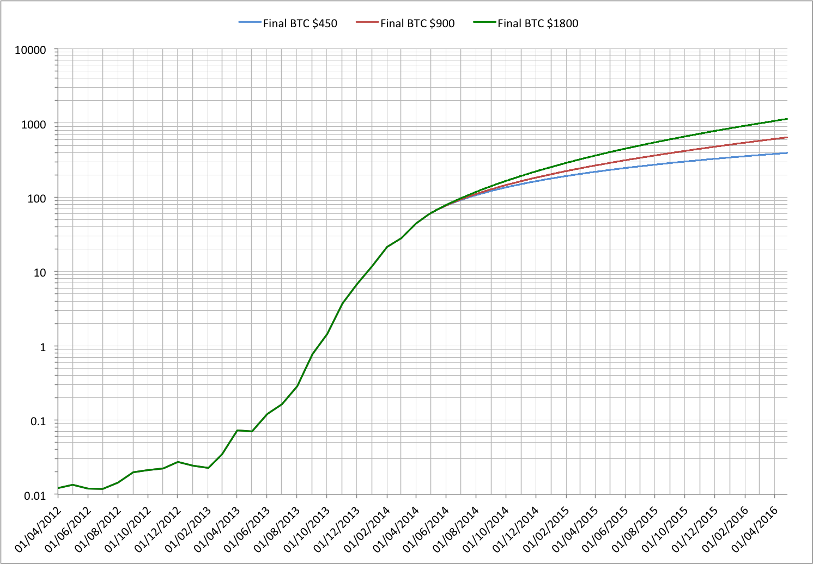

Dave Hudsonhashingit.com |
One of the more common questions asked when people think about the scale of Bitcoin mining is just how much electricity is being spent supporting the worldwide hashing activities. The question becomes more interesting once it’s realized that hashing performs no useful function other than to support mining.
While the green footprint is of interest to many, the electricity costs turn out to play a much more interesting role in predicting future mining behaviour. They play a major role in defining the viability of mining hardware, help determine the upper limit on the worldwide hashing rate and the potential scale of future mining operations.
At the time of writing (2014-04-27) a state-of-the-art 28 nm mining ASIC achieves between 700 and 800 GH/s at a power cost of about 0.65 W/GH/s. The current worldwide hashing rate is hovering around 57 PH/s and so that equates to about 37 MW. While this defines a theoretical minimum power consumption it’s nowhere near the actual number; most mining is not using state-of-the-art hardware and is probably operating at closer to 1 to 2 W/GH/s. If we assume an average of 1.5 W/GH/s then that would probably give a more realistic power requirement of about 86 MW.
There is a small amount of hashing capacity provided by older, much less efficient designs but we can largely ignore these systems for our purposes; very few miners can sustain operating at a substantial operating loss. Similarly there are newer designs due to ship within a month or two that may reduce the power requirements to 0.52 W/GH/s and potentially less, but these aren’t apparently contributing to the current hashrate in any very significant way. We’re also choosing to ignore the costs of hardware that control the mining ASICs and the PSU inefficiencies.
If we take our 86 MW number then that equates to 2.06M kWh of electricity per day. Electricity prices vary quite a lot based on location but the range is probably as low as $0.08 all the way through to $0.50 (see energyusecalculator.com/global_electricity_prices), but a reasonable working average might be $0.20. Commercial users might average a lower raw cost for electricity, but they will often have to pay for cooling systems that in turn take electricity and so have an amortized cost that is probably not dissimilar.
At this level the electricity bill for the worldwide hashing would currently be $413k per day (about $151M per year!).
In an earlier article, “The rewards for a Bitcoin miner", we looked at how hardware costs and mining rewards could put an upper limit on the worldwide hashing rate, but this didn’t really try to account for operating costs. If we start to think about these it starts to provide some new insights!
First we need to consider the total Bitcoin mining rewards that are available each day. With the BTC price at around $450, the current growth in hashing rate and the current transaction fees the available mining reward is around $2M per day.
If we take our electricity estimate of $413k per day then that still leaves us with about $1.58M left over. If we ignore any need to pay other overheads then that can in theory just go on paying for new hashing hardware. Of course this isn’t really possible and our miners still need to deduct money for equipment space, cooling, salaries, replace failed hardware, taxes and of course any profits. We can get an upper bound this way though, so it’s still useful.
At $3.20 per GH/s then $1.58M pays for a little over 490 TH/s per day, or about 28.6 PH/s of extra capacity after 58 days. At the beginning of March 2014 our total hash rate was around 30 PH/s, while 58 days later we’re at 57 PH/s and have thus added a net 27 PH/s. That’s surprisingly close!
As new hardware goes online, older, far less efficient devices, drop off the network so the additional capacity isn’t purely additive. A percentage of our original capacity will have been lost this way and other losses will occur because of equipment failures. All this suggests that for the moment, at least, hashing capacity is being added at a rate that is probably not even close to breaking even for many of those concerned. Total mining rewards are being fully absorbed by new hardware, yet those other overheads are very real.
Most of this recently added hashing capacity was prepaid when the BTC price was much higher and expectations of returns were equally higher. The past few months will have certainly curtailed much of that enthusiasm. It seems very likely that in the short term a lot more older mining hardware will have to shut down and the purchase of newer hardware will slow down unless the BTC price recovers significantly. This probably has the largest impact on anyone looking to mine on a commercial scale because they have to generate profits to return to investors as well as cover costs.
In another article, “Where next for Bitcoin mining ASICs?", some thought was given to how much opportunity there is to see much more efficient hashing hardware. It seems inevitable that technology will no longer offer a path to dramatically higher hashing rates at the same capital and operating costs. That can only mean one thing, hashing rate increases will become much more incremental. There is some evidence that this is already happening and where only a few months ago hashing rates were increasing 10x every 4 months, they’re now starting to take longer. This no longer seems surprising given what we have just calculated.
In order to better understand this it seemed a good model was required. I built a simulation (written in C) that calculates mining behaviour using a more refined version of the ideas presented above. As with all models there are some assumptions, so here are the main ones:
Let’s look at the prediction. Data prior to May 2014 is actual measured data from blockchain.info, while the 2 years after are predicted.

The vertical axis is logarithmic and clearly shows how the hashing rate will slow down over the next two years. What’s somewhat interesting is that whether the BTC price remains the same, doubles or quadruples over that time the effect is still pronounced. The hashing rate continues to grow, but slows dramatically. What’s also important to reiterate is that these represent the highest hashing rates that can be achieved; when other overheads and profits are taken then the growth rate will be lower and flatter.
Mainstream server farms in small data centres were the model of computing for many years, but the need for power and management efficiency has driven the development of warehouse scale computing facilities. These same motivators clearly affect Bitcoin mining too.
For most of the last year the exponential hashing growth rate has meant that mining has necessarily been focused on the short term, a trend that is all but totally incompatible with the sorts of investments required to operate at warehouse scale. The predicted slowdown should start to change that quite dramatically.
Warehouse scale designs can operate with the lowest electricity costs and lowest cooling costs while also enabling more cost effective maintenance. Large scale mining also allows dramatic reductions in equipment costs; the unit price for 10000 ASICs will be dramatically lower than for 10.
It is somewhat ironic that rather the decentralized hashing we may be on the verge of moving much of it into large, highly centralized, mining facilities.
Data for this article was sourced via blockchain.info